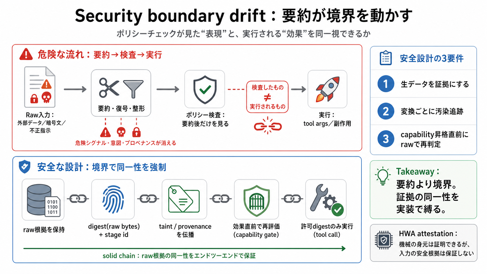

Plans, Reports, and Policies
The AGO is committed to openness and transparency. We post our financial reports and key policies for everyone to see.

The AGO is committed to openness and transparency. We post our financial reports and key policies for everyone to see.
AGO's All Lines Policy System on the Web (PSWeb) is a comprehensive underwriting component in the integrated suite of AG…
KRIS MAYES ATTORNEY GENERAL 2005 NORTH CENTRAL AVENUE, PHOENIX, AZ 85004 • PHONE: 602.542.8056 • WWW.AZAG.GOV OFFICE OF …
To request a reasonable accommodation to access AGO services, complete and submit the online Request an Accommodation fo…
President Obama signed the Affordable Care Act 16 years ago, it wasn't just policy— it was progress, centered on the bel…